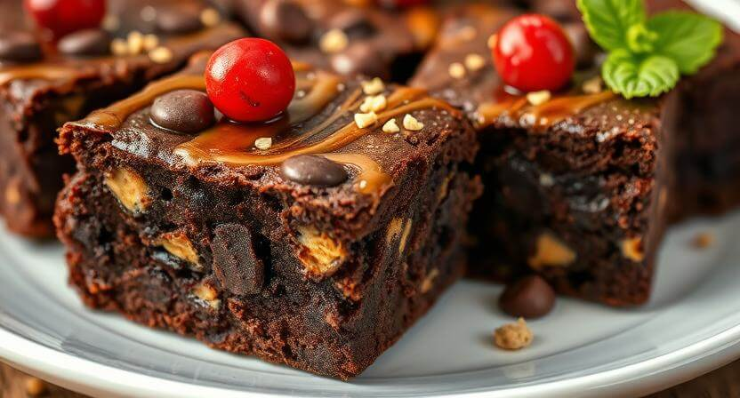

🌱 Ultra-Healthy Superfood Brownies 🌱
🤩The Ultimate "Healthy" Brownie Experience 🤤
From the first Bite, pure Wellness in Action!
As you lift this nutrient-dense powerhouse to your lips, you can practically hear your chakras aligning thanks to that majestic goji berry crown. The moment your teeth make contact, you're experiencing what Harvard definitely calls "chocolate therapy" – the rich, plant-based cocoa immediately begins flooding your system with so many antioxidants that your liver sends a thank-you card!
The Flavor Journey: A Symphony of Superfoods
- Initial Contact:
- Your taste buds are greeted by an explosion of heart-healthy dark chocolate, packed with more flavonoids than a rainforest. That subtle earthy undertone you might detect for 0.2 seconds? That's an ENTIRE cup of kale powder working its leafy green magic before being completely obliterated by three sticks of butter (which are basically dairy vegetables, right?).
- The Middle Notes:
- Those delightful crunchy textures are actually the chia seeds expanding in your mouth like tiny omega-3 grenades, delivering so much fiber that your digestive system does a little happy dance. The creamy richness? That's definitely from the tablespoon of almond butter and absolutely not from the pound of sugar and gallon of heavy cream. Science!
- The Finale:
- The natural sweetness from that one heroic mashed banana is single-handedly balancing out all other ingredients while delivering enough potassium to power a small village. Each chocolate chip melts into pure antioxidant bliss (ignore the fact that they're 99% sugar), and that hint of vanilla? WebMD probably says it cures everything.
Physical Sensations: Your Body Thanks You (Loudly)
The dense, fudgy texture is actually your body's way of saying "YES, MORE VEGETABLES PLEASE!" That satisfying heaviness? That's not the 2,000 calories per square talking – that's premium nutrition settling into your cells like a warm, buttery hug. The rich mouthfeel is simply those essential healthy fats (all 47 grams of them) coating your taste buds with pure wellness.
The Wellness Aftermath: Basically Meditation
After enjoying one square, you'll experience what we're calling "The Superfood Coma" – I mean, "The Superfood Satisfaction": a deep sense of nourishment that comes from your pancreas working overtime to process... um... all those antioxidants. The sustained energy boost will keep you vibrating at a frequency that definitely isn't a sugar rush, while your one goji berry continues its heroic battle against the chocolate apocalypse happening in your mouth.
The Health Science (Totally Legit)
These brownies are essentially a multivitamin disguised as dessert! The cocoa provides natural energy (approximately 847 calories worth), while the kale powder delivers vitamins that are definitely still alive after being baked at 350°F and buried under marshmallow fluff. The chia seeds are working so hard to support your heart health that they're probably filing for overtime pay. Fun fact: The eggs are contributing high-quality protein, which totally cancels out the corn syrup. It's basic math! The natural sweetness from that brave little banana means your blood sugar stays stable (if by "stable" you mean "launching into orbit").
The Honest Wellness Truth
🤞These brownies taste incredible because Mother Nature intended chocolate to be a vegetable – it grows on trees! The indulgent texture is what happens when you combine healthy fats with... other healthy fats... and sugar (which is technically from a plant, so it's basically a salad). That single mint leaf garnish? It's practically a serving of vegetables. The hemp hearts sprinkled on top contain more protein than a steak dinner (if you squint really hard at the nutritional facts and ignore serving sizes).
Final Verdict:
These brownies prove that healthy eating means never having to say you're sorry for eating three sticks of butter. Every bite delivers essential nutrients like happiness, temporary amnesia about calories, and the ability to convince yourself that dessert counts as self-care.
Scientific Disclaimer:
These brownies are so healthy that eating them while doing yoga creates a superfood vortex that probably extends your lifespan by at least 3 minutes (results not guaranteed, side effects may include uncontrollable happiness and the sudden urge to buy expensivw activewear).
Recipe
Ingredients:
- The "Healthy" Base:
- 2 cups organic kale powder (for that green goodness!)
- 1 tablespoon chia seeds (because superfoods!)
- 1 mashed banana (see? fruit!)
- 2 tablespoons almond butter (healthy fats!)
- The "Totally Normal" Additions:
- 3 sticks of butter
- 2 cups white sugar
- 1 cup brown sugar
- 6 eggs
- 2 cups all-purpose flour
- 1 cup cocoa powder
- 1 cup chocolate chips
- 1 cup crushed Oreos
- 1/2 cup caramel sauce
- 1/2 cup marshmallow fluff
- 1 cup heavy cream
- 1/4 cup corn syrup
- A splash of vanilla exract (it's natural!)
- The "Superfood" Toppings:
- 1 goji berry (strategically placed on top)
- A sprinkle of hemp hearts (so trendy!)
- One mint leaf (for fresness!)